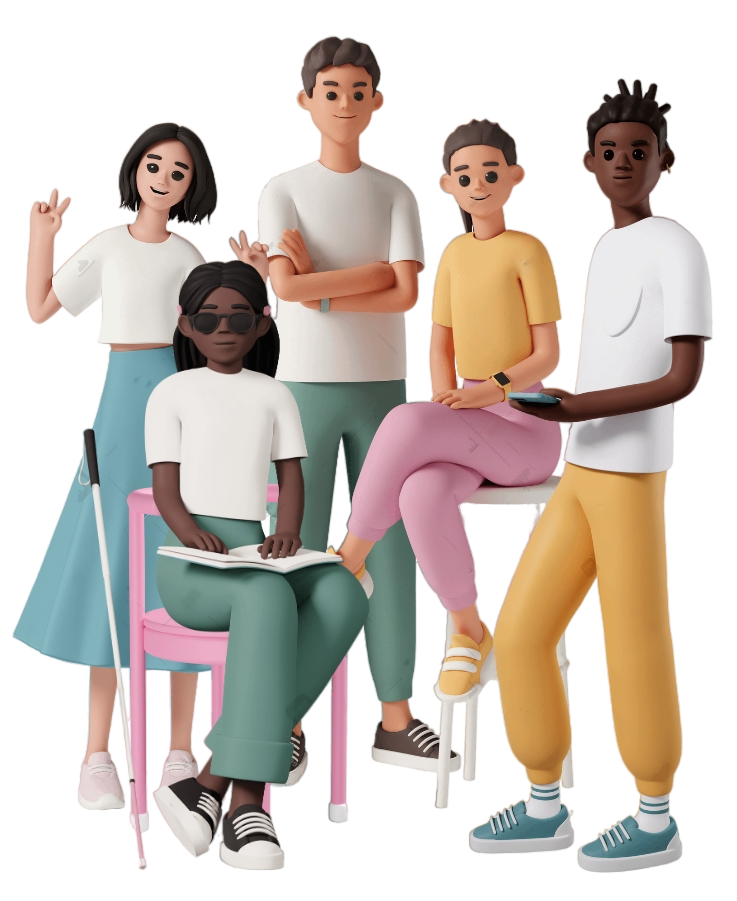

Tudo bem com você?
Nós somos a equipe empatia e estamos aqui para te ajudar caso esteja sofrendo algum tipo de ou queira ajudar alguém que esteja passando por isto.
Que bom te encontrar! Me chamo Janna e esse é o meu cão-guia, o Fred que me ajuda a navegar pela vida.
Viu que curioso o nome da nossa equipe? Quer saber o significado e entender o que fazemos? Só clicar em saber mais abaixo que terei o prazer de explicar! Caso contrário, nossos amigos Yumi e Lucas te aguardam ali embaixo.
Oi, Fernando! Sou o Samuel e estou aqui para ajudar a notificar casos de bullying.
Você sofreu ou presenciou algum caso? Não se preocupe, se preferir pode fazer uma notificação anônima, ninguém saberá que foi você, mas conseguiremos resolver mais rápido se você informar o seu nome.
Caso já tenha feito alguma notificação anterior, pode acompanhar o que está sendo feito para te ajudar com a Aline.
Oi, Fernando! Como vai?
Sou Aline, vi aqui que você não notificou nenhum caso de bullying. Caso venha a notificar algum dia eu estarei aqui para te informar o andamento com as ações tomadas para acabar com o problemas.
Não tenha receio de notificar caso presenciei algum caso, faremos de tudo para melhorar o ambiente escolar. Um grande abraço e bons estudos!